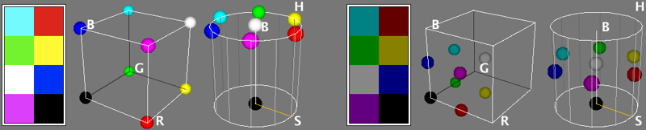
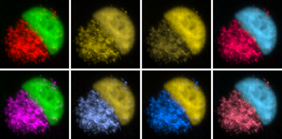

9 Color Images [D] [D] This section is partially extracted from the MBF ImageJ online manual at http://www.macbiophotonics.ca/imagej/colour_image_processi.htm.
ImageJ deals with color mainly in three ways: pseudocolor images, RGB images, RGB/ HSB[?] stacks, and composite images.
Pseudocolor Images
A pseudocolor (or indexed color) image is a single channel gray image (8, 16 or 32-bit) that has color assigned to it via a lookup table or LUT[?]. A LUT is literally a predefined table of gray values with matching red, green and blue values so that shadows of gray are displayed as colorized pixels. Thus, differences in color in the pseudo-colored image reflect differences in intensity of the object rather than differences in color of the specimen that has been imaged.
8-bit indexed color images (such as GIFs) are a special case of pseudocolor images as their lookup table is stored in the file with the image. These images are limited to 256 colors (24-bit RGB images allow 16.7 million of colors, see Image Types and Formats↑) and concomitantly smaller file sizes. Reduction of true color values to a 256 color palette is performed by color quantization algorithms. ImageJ uses the Heckbert’s median-cut color quantization algorithm (see menu), which, in most cases, allows indexed color images to look nearly identical to their 24-bit originals.
and LUT Menu↓
True Color Images
As described in Image Types and Formats↑, true color images such as RGB images reflect genuine colors, i.e., the green in an RGB image reflects green color in the specimen. Color images are typically produced by color CCD[?] cameras, in which color filter arrays (Bayer masks) are placed over the image sensor.
Color Spaces and Color Separation
Color spaces describe the gamut of colors that image-handling devices deal with. Because human vision is trichromatic, most color models represent colors by three values. Mathematically, these values (color components) form a three-dimensional space such as the RGB, HSB, CIE Lab or YUV color space.

Figure 3 Representation of an eight pixel color image in the RGB and HSB color spaces. The RGB color space maps the RGB color model to a cube with Red (R) values increasing along the x-axis, Green (G) along the y-axis and Blue (B) along the z-axis. In the HSB cylindrical coordinate system, the angle around the central vertical axis corresponds to Hue (H), the distance from the axis corresponds to Saturation (S), and the distance along the axis corresponds to Brightness (B). In both cases the origin holds the black color. The right panel shows the same image after brightness reduction, easily noted by the vertical displacement along the HSB cylinder. Images produced using Kai Uwe Barthel’s 3D Color Inspector plugin.
RGB (Red, Green, Blue) is the most commonly-used color space. However, other alternatives such as HSB (Hue, Saturation, Brightness) provide significant advantages when processing color information. In the HSB color space, Hue describes the attribute of pure color, and therefore distinguishes between colors. Saturation (sometimes called “purity” or “vibrancy”) characterizes the shade of color, i.e., how much white is added to the pure color. Brightness (also know as Value — HSV system) describes the overall brightness of the color (see e.g., the color palette of Color Picker window↓). In terms of digital imaging processing, using the HSB system over the traditional RGB is often advantageous: e.g., since the Brightness component of an HSB image corresponds to the grayscale version of that image, processing only the brightness channel in routines that require grayscale images is a significant computational gain [E] [E] See Wootton R, Springall DR, Polak JM. Image Analysis in Histology: Conventional and Confocal Microscopy. Cambridge University Press, 1995, ISBN 0521434823. You can read more about the HSB color model here.
In ImageJ, conversions between image types are performed using the submenu. Segmentation on the HSB, RGB, CIE Lab and YUV color spaces can be performed by the command [20]. Segregation of color components (specially useful for quantification of histochemical staining) is also possible using Gabriel Landini’s Colour Deconvolution plugin. In addition, several other plugins related to color processing can be obtained from the ImageJ website.
Conveying Color Information [F] [F] This section is partially extracted from Masataka Okabe and Kei Ito, Color Universal Design (CUD) — How to make figures and presentations that are friendly to Colorblind people, http://jfly.iam.u-tokyo.ac.jp/color/, accessed 2009.01.15
People see color with significant variations. Indeed, the popular phrase “One picture is worth ten thousand words” may not apply to certain color images, specially those that do not follow the basic principles of Color Universal Design. Citing Masataka Okabe and Kei Ito:
Colorblind people can recognize a wide ranges of colors. But certain ranges of colors are hard to distinguish. The frequency of colorblindness is fairly high. One in 12 Caucasian (8%), one in 20 Asian (5%), and one in 25 African (4%) males are so-called ‘red--green’ colorblind.
There are always colorblind people among the audience and readers. There should be more than ten colorblind in a room with 250 people (assuming 50% male and 50% female).
[ …] There is a good chance that the paper you submit may go to colorblind reviewers. Supposing that your paper will be reviewed by three white males (which is not unlikely considering the current population in science), the probability that at least one of them is colorblind is whopping 22%!

Figure 4 Red--green images and partial color blindness. Deuteranopia (second panel), protanopia (third panel) are the most common types of partial color blindness (red / green confusion). Tritanopia (blue / orange confusion, fourth panel) is quite rare. Replacing Red with Magenta in RGB Images↓ (bottom row) is a simple way to compensate for color vision deficiencies.
5 Replacing Red with Magenta in RGB Images
When building RGB images, magenta can be obtained using the Previously created RGB images can be converted to ‘MGB’ using . Alternatively, the command can be used to add the red channel to the blue channel. Both these approaches can be automated using the ImageJ macro language as exemplified by Macros Replace Red with Magenta (1)↓ and Replace Red with Magenta (2)↓. Once saved in the ImageJ/plugins/ folder these Macros↓ are treated as regular ImageJ commands.
It is also possible to simulate color blindness using the Vischeck or Dichromacy plugins [G] [G] One advantage of Dichromacy over the Vischeck plugin is that it can be recorded and called from scripts and macros, without user interaction., or in Fiji↑, using the command.
/* This macro replaces Red with Magenta in RGB images using Process>Image Calculator... command. */
if (bitDepth!=24)
exit("This macro requires an RGB image");
setBatchMode(true);
title= getTitle();
r= title+" (red)"; g= title+" (green)"; b= title+" (blue)";
run("Split Channels");
imageCalculator("Add", b, r);
run("Merge Channels...", "red=&r green=&g blue=&b");
rename(title + " (MGB)");
setBatchMode(false);
Color Composite Images
In a composite image colors are handled through channels. The advantages with this type of image over plain RGB images are:
- Each channel is kept separate from the others and can be turned on and off using the ‘Channels’ tool (). This feature allows, e.g., to perform measurements on a specific channel while visualizing multiple.
- Channels can be 8, 16 or 32-bit and can be displayed with any lookup table
- More than 3 channels can be merged or kept separate
/* This macro replaces Red with Magenta in RGB images using the Image>Color>Channels... tool. */
if (bitDepth!=24) // Ignore non-RGB images
exit("This macro requires an RGB image");
setBatchMode(true); // Enter ‘Batch’ mode
title = getTitle(); // Retrieve the image title
run("Make Composite"); // Run Image>Color>Make Composite
run("Magenta"); // Run Image>Lookup Tables>Magenta on channel 1
run("RGB Color"); // Run Image>Type>RGB Color
rename(title + " (MGB)"); // Rename the image
setBatchMode(false); // Restore ‘GUI’ mode